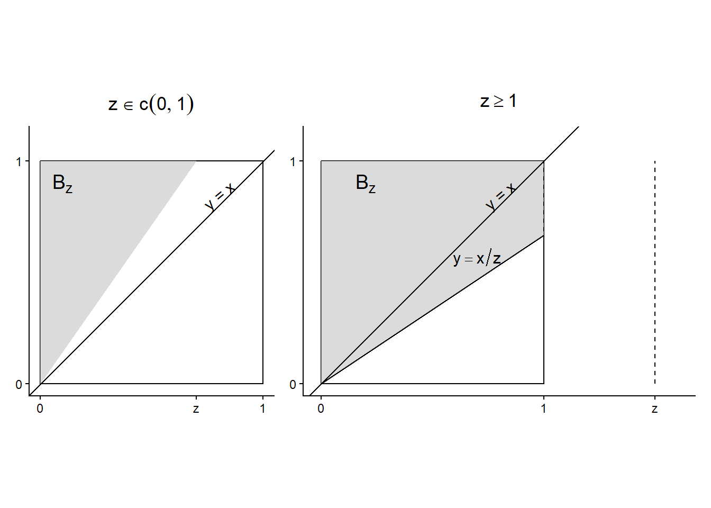
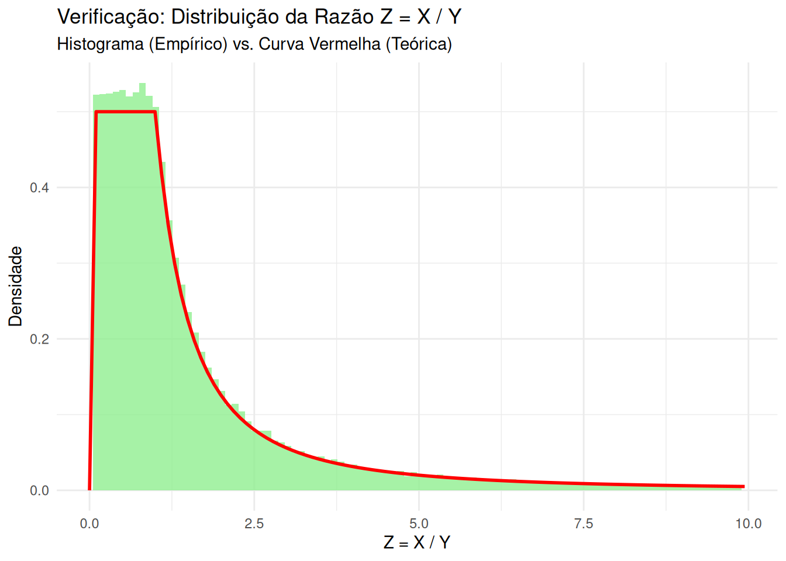

11 Distribuição de Transformações de Vetores Aleatórios
Seja \(\underline{X} = (X_1, \dots, X_n)\) um vetor aleatório com \((\Omega, \mathcal{F}, \mathbb{P})\). Objetivo: determinar a distribuição de \(Y = g(\underline{X}) = g(X_1, \dots, X_n)\), com \(g: \mathbb{R}^n \rightarrow \mathbb{R}\).
DicaPerspectiva de Data Science: A Base da Engenharia de Features
Este tópico é o fundamento matemático da engenharia de features. Quase nunca usamos as features brutas \((X_1, \dots, X_n)\) diretamente. Nós as transformamos:
- Padronização/Normalização: \(Y = (X - \mu) / \sigma\) ou \(Y = (X - \min(X)) / (\max(X) - \min(X))\)
- Logaritmo: \(Y = \log(X)\) (para reduzir assimetria)
- Features Polinomiais: \(Y_1 = X^2\), \(Y_2 = X_1 X_2\) (para capturar não-linearidades)
- Agregações: \(Y = \text{mean}(X_1, \dots, X_n)\) (ex: média de gastos nos últimos \(n\) dias)
- Métricas de Negócio: \(Y = X_1 / X_2\) (ex:
receita / sessoes= Receita por Sessão)
A pergunta central é: se conhecemos a distribuição das features originais (\(\underline{X}\)), qual é a distribuição da feature transformada (\(Y\))?
Para que Y seja uma v.a., vamos supor que \(g\) seja uma função mensurável a Borel, isto é: \[ g^{-1}(B) = \{\underline{x} \in \mathbb{R}^n : g(\underline{x}) \in B\} \in \mathcal{B}^n, \quad \forall B \in \mathcal{B} \]
A função de distribuição de Y é: \[ F_Y(y) = \mathbb{P}(Y \le y) = \mathbb{P}(g(X_1, \dots, X_n) \le y) \] de modo que \(g(\underline{x}) \le y \Leftrightarrow \underline{x} \in B_y = \{\underline{x} \in \mathbb{R}^n : g(\underline{x}) \le y\}\).
Logo, \[ F_Y(y) = \mathbb{P}(\underline{X} \in B_y) \]
DicaPerspectiva de Data Science: Traduzindo para Filtros
A fórmula \(F_Y(y) = \mathbb{P}(\underline{X} \in B_y)\) significa que, para calcular a probabilidade da feature transformada \(Y\) ser menor que \(y\), precisamos encontrar a região \(B_y\) no espaço das features originais \(\underline{X}\) que causa \(g(\underline{X}) \le y\), e então calcular a probabilidade dessa região \(B_y\).
Na prática, isso se traduz em aplicar um filtro complexo no dataset original.
- \(Y = X_1 / X_2\) (Receita por Sessão)
- \(F_Y(10) = \mathbb{P}(Y \le 10) = \mathbb{P}(X_1 / X_2 \le 10)\)
- \(B_{10} = \{(x_1, x_2) : x_1/x_2 \le 10\}\) (a região no espaço (Receita, Sessões))
- \(F_Y(10)\) é a proporção de usuários cujo par (
receita,sessoes) cai nessa região \(B_{10}\).
Se \(\underline{X}\) for discreto, então Y também será e \[ \mathbb{P}(Y = y_j) = \mathbb{P}(g(\underline{X}) = y_j) = \sum_{i: g(\underline{x}_i) = y_j} \mathbb{P}(\underline{X} = \underline{x}_i) \] em que \(y_j\) é um valor possível de Y.
Exemplo 11.1 (Exemplo 2.14: Feature Polinomial) Seja X uma v.a. discreta com \[ \mathbb{P}(X=x) = \frac{1}{2n}, \quad x = -n, \dots, -1, 1, \dots, n \] Defina \(Y = X^2\) (uma transformação polinomial). Obtenha a função de probabilidade de Y.
Notemos que Y toma valores \(1^2, 2^2, 3^2, \dots, n^2\). Para \(r = 1, 2, \dots, n\): \[ \begin{align*} \mathbb{P}(Y = r^2) &= \sum_{i: x_i^2 = r^2} \mathbb{P}(X = x_i) \\ &= \mathbb{P}(X = -r) + \mathbb{P}(X = r) \\ &= \frac{1}{2n} + \frac{1}{2n} = \frac{2}{2n} = \frac{1}{n} \end{align*} \] A função de probabilidade de \(Y=X^2\) é: \[ \mathbb{P}(Y = y) = \frac{1}{n}, \quad y = 1, 4, 9, \dots, n^2 \]
DicaPerspectiva de Data Science: Impacto da Transformação na Distribuição
Note como a transformação \(g(X)=X^2\) mudou a distribuição.
- \(X\) era Uniforme Discreta (todos os valores tinham a mesma probabilidade \(1/2n\)).
- \(Y\) também é Uniforme Discreta, mas em um conjunto diferente de valores e com probabilidade \(1/n\).
Isso é crucial: aplicar uma função (mesmo simples como \(X^2\)) muda a forma do histograma. É por isso que aplicamos transformações como \(\log(X)\) para corrigir a assimetria dos dados.
Exemplo 11.2 (Exemplo 2.15: Transformação Logarítmica e Geração de V.A.s) Se \(X \sim U(0, 1)\), qual a distribuição de \(Y = -\log X\)? Para \(y \in (0, \infty)\): \[ \begin{align*} F_Y(y) &= \mathbb{P}(Y \le y) = \mathbb{P}(-\log X \le y) \\ &= \mathbb{P}(\log X \ge -y) = \mathbb{P}(X \ge e^{-y}) \\ &= 1 - \mathbb{P}(X < e^{-y}) = 1 - F_X(e^{-y}) \end{align*} \] Como \(X \sim U(0, 1)\), \(F_X(x) = x\) para \(x \in (0, 1)\). Como \(y > 0\), \(e^{-y} \in (0, 1)\). \[ F_Y(y) = 1 - e^{-y} \] Esta é a f.d.a. de uma v.a. \(\text{exp}(1)\). Logo, \(Y \sim \text{exp}(1)\).
DicaPerspectiva de Data Science: Probability Integral Transform (PIT)
Este resultado é extremamente importante e é uma aplicação da Transformada Integral de Probabilidade (PIT). A PIT diz que se \(X\) tem FDA \(F_X\), então \(U = F_X(X) \sim U(0, 1)\).
A inversa também vale: se \(U \sim U(0, 1)\), então \(X = F_X^{-1}(U)\) tem distribuição \(F_X\).
Neste exemplo: * \(Y \sim \text{exp}(1)\) tem \(F_Y(y) = 1 - e^{-y}\). * A inversa é \(F_Y^{-1}(u) = -\log(1-u)\). * Se \(U \sim U(0, 1)\), então \(1-U\) também é \(U(0, 1)\). * Portanto, \(X = F_Y^{-1}(U) = -\log(U)\) (onde \(U=1-U'\)) gera uma \(\text{exp}(1)\).
Conclusão: É assim que computadores geram números aleatórios de qualquer distribuição (Normal, Gama, Beta, etc.). Eles geram um número \(U(0, 1)\) (que é fácil) e aplicam a função \(F^{-1}\) (a função quantil q*) para obter um número da distribuição desejada. O Exemplo 2.15 prova isso para a Exponencial.
Exemplo 11.3 (Exemplo 2.16: Distribuição de Ratios) Se X e Y são independentes, com \(X \sim U(0, 1)\) e \(Y \sim U(0, 1)\), qual é a distribuição de \(Z = X/Y\)? \(z \in (0, \infty)\). \[ F_Z(z) = \mathbb{P}(Z \le z) = \mathbb{P}(\frac{X}{Y} \le z) = \mathbb{P}((X, Y) \in B_z) \] em que \(B_z = \{(x, y) \in \mathbb{R}^2 : 0 < x < 1, 0 < y < 1, x/y \le z\}\) \[ B_z = \{(x, y) \in (0, 1)^2 : y \ge x/z \} \] A densidade conjunta é \(f(x, y) = 1\) no quadrado \((0, 1)^2\). \(F_Z(z) = \iint_{B_z} 1 \cdot dx dy\).
Para \(z \in (0, 1)\): A área \(B_z\) é a área do quadrado menos a área do triângulo abaixo da linha \(y=x/z\). O triângulo tem base \(z\) e altura \(1\). Área = \(1 - (z \times 1 / 2) = 1 - z/2\).
\[ \begin{align*} F_Z(z) &= \text{Área}(B_z) = \int_0^z \int_{x/z}^1 1 \, dy \, dx = \int_0^z [y]_{x/z}^1 dx = \int_0^z (1 - \frac{x}{z}) dx \\ &= \left[ x - \frac{x^2}{2z} \right]_0^z = (z - \frac{z^2}{2z}) - 0 = z - \frac{z}{2} = \frac{z}{2} \quad \checkmark \end{align*} \]
Para \(z \ge 1\): A área \(B_z\) é a área do quadrado menos a área do triângulo abaixo da linha \(y=x/z\). O triângulo tem base \(1\) e altura \(1/z\). Área = \(1 - (1 \times (1/z) / 2) = 1 - 1/(2z)\).
\[ F_Z(z) = \text{Área}(B_z) = \int_0^1 \int_{x/z}^1 1 \, dy \, dx = \int_0^1 (1 - x/z) dx \\ = [x - x^2/(2z)]_0^1 = 1 - 1/(2z) \quad \checkmark \]
Logo, \[ F_Z(z) = \begin{cases} 0, & z \le 0 \\ z/2, & 0 < z < 1 \\ 1 - \frac{1}{2z}, & z \ge 1 \end{cases} \] A f.d.p. é \(f_Z(z) = F_Z'(z)\): \[ f_Z(z) = \begin{cases} 0, & z \leq y \\ 1/2, & 0 < z < 1 \\ \frac{1}{2z^2}, & z \ge 1 \end{cases} \]
DicaPerspectiva de Data Science: O Desafio das Métricas de Razão
Este exemplo é crucial. Muitas métricas de negócio são razões de duas variáveis aleatórias:
CTR = Cliques / ImpressõesTaxa de Conversão = Conversões / SessõesTicket Médio = Receita / Transações
Mesmo que as variáveis originais (\(X, Y\)) sejam “bem comportadas” (como a Uniforme), a distribuição da razão (\(Z\)) pode ser complexa e assimétrica (como a \(f_Z(z)\) que encontramos).
Implicações:
- Não use Teste-t ingenuamente: Você não pode simplesmente calcular a média e o desvio padrão de \(Z\) e aplicar um Teste-t para comparar dois grupos. A suposição de Normalidade é provavelmente violada.
- Cuidado com Médias: A média de uma razão (\(\mathbb{E}[X/Y]\)) não é a razão das médias (\(\mathbb{E}[X]/\mathbb{E}[Y]\)). Isso leva a erros em dashboards e análises.
- Modelagem: Modelos que preveem \(Z\) diretamente podem ser instáveis. Muitas vezes é melhor modelar \(X\) e \(Y\) separadamente e calcular a razão depois.
11.1 Implementação Prática em R
Vamos verificar empiricamente os resultados dos exemplos usando simulação.
Verificando Exemplo 2.14 (\(Y=X^2\))
Vamos simular \(X\) e calcular \(Y=X^2\). A distribuição de \(Y\) deve ser uniforme nos quadrados.
library(tidyverse)
n_sim <- 100000
n_param <- 5 # Parâmetro n do exemplo
# Simular X
valores_x <- c(-n_param:-1, 1:n_param)
X <- sample(valores_x, size = n_sim, replace = TRUE, prob = rep(1/(2*n_param), 2*n_param))
# Transformar Y = X^2
Y <- X^2
# Calcular a distribuição empírica de Y
dist_y_empirica <- table(Y) / n_sim
print(dist_y_empirica)Y
1 4 9 16 25
0.19887 0.20065 0.19782 0.20215 0.20051 # Valores teóricos esperados: 1/n = 1/5 = 0.2 para y = 1, 4, 9, 16, 25
valores_y_teoricos <- (1:n_param)^2
prob_y_teorica <- rep(1/n_param, n_param)
names(prob_y_teorica) <- valores_y_teoricos
print(prob_y_teorica) 1 4 9 16 25
0.2 0.2 0.2 0.2 0.2 Verificando Exemplo 2.15 \((Y = -\log X \implies \text{exp}(1))\)
Simulamos \(X \sim U(0, 1)\), calculamos \(Y = -\log X\), e plotamos o histograma de \(Y\). Ele deve se parecer com a densidade da \(\text{exp}(1)\).
n_sim <- 100000
# Simular X ~ U(0, 1)
X <- runif(n_sim, 0, 1)
# Transformar Y = -log(X)
Y <- -log(X)
# Plotar o histograma de Y (normalizado) e a curva teórica exp(1)
ggplot(tibble(Y = Y), aes(x = Y)) +
geom_histogram(aes(y = after_stat(density)), bins = 50, fill = "lightblue", alpha = 0.8) +
# Adiciona a curva teórica da exp(1)
stat_function(fun = dexp, args = list(rate = 1), color = "red", linewidth = 1) +
labs(
title = "Verificação: Y = -log(X) ~ Exp(1)",
subtitle = "Histograma (Empírico) vs. Curva Vermelha (Teórica)",
x = "Y = -log(X)",
y = "Densidade"
) +
theme_minimal() +
xlim(0, quantile(Y, 0.99)) # Limita eixo x para melhor visualizaçãoVerificando Exemplo 2.16 \((Z = X/Y)\)
Simulamos \(X, Y \sim U(0, 1)\), calculamos \(Z = X/Y\), e comparamos o histograma de \(Z\) com a \(f_Z(z)\) que derivamos.
n_sim <- 100000
# Simular X e Y independentes
X <- runif(n_sim, 0, 1)
Y <- runif(n_sim, 0, 1)
# Transformar Z = X / Y
Z <- X / Y
# Definir a função de densidade teórica f_Z(z)
f_Z_teorica <- function(z) {
ifelse(z <= 0, 0,
ifelse(z < 1, 1/2, 1 / (2 * z^2))
)
}
# Plotar o histograma de Z e a curva teórica f_Z(z)
ggplot(tibble(Z = Z), aes(x = Z)) +
geom_histogram(aes(y = after_stat(density)), bins = 100, fill = "lightgreen", alpha = 0.8) +
stat_function(fun = f_Z_teorica, color = "red", linewidth = 1) +
labs(
title = "Verificação: Distribuição da Razão Z = X / Y",
subtitle = "Histograma (Empírico) vs. Curva Vermelha (Teórica)",
x = "Z = X / Y",
y = "Densidade"
) +
theme_minimal() +
xlim(0, quantile(Z, 0.95))